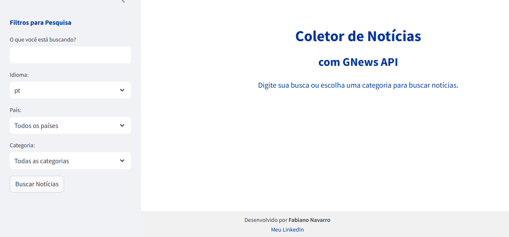
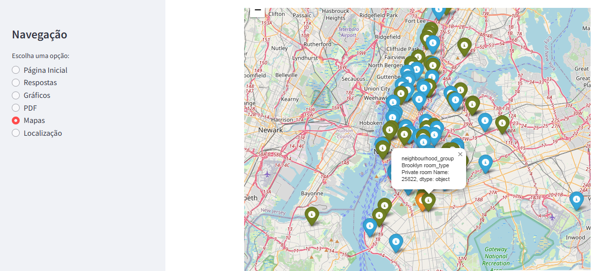
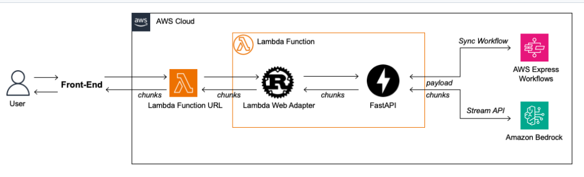

Nosso Portfólio de Projetos
Confira alguns dos projetos concluídos com sucesso
Estes exemplos ilustram a capacidade de entregar soluções de desenvolvimento e implementação de alta qualidade.
Projetos Destacados
Coletor de Notícias
O Coletor de Notícias é um projeto em Streamlit que cria uma aplicação interativa para coletar e exibir notícias de diversas fontes, mostrando habilidades em Python e integração com APIs.
- Tecnologias: Python, Streamlit
- Link: Ver projeto ao vivo

Projeto de Análise de Dados
Aplicativo interativo que analisa dados de hospedagem em Nova York, apresentando estatísticas, gráficos e insights usando Python.
- Tecnologias: Python, pandas, matplotlib
- Link: Código no GitHub

Prompt-Engineer
Boas práticas de prompt engineering
Desafio de Prompt Engineer para criar treinos ideais considerando biotipo, tempo disponível e tipo de exercícios preferidos.
- Tecnologias: Python, aws-stepfunctions-exemplos
- Link: Código no GitHub

Projeto de IAs Generativas
Interface de Usuário Natural (NUI) usando ChatGPT e studio.d-id, criando experiências digitais humanas sem cliques ou digitação.
- Tecnologias: ChatGPT, studio.d-id
- Link: Código no GitHub
Outros Trabalhos do GitHub
Confira outros projetos no meu GitHub:
- Projeto gerador_readme - Criação rápida de README.
- Cálculo de NPS da iFood
- Projeto Criptografia
- Projeto POWERBI_RH
- Machine_Learning-analise_covid19
Currículo
Atuei por mais de uma década em grandes empresas, focado em customer service e especialista em análise de suporte, segurança, backup, banco de dados e relatórios.